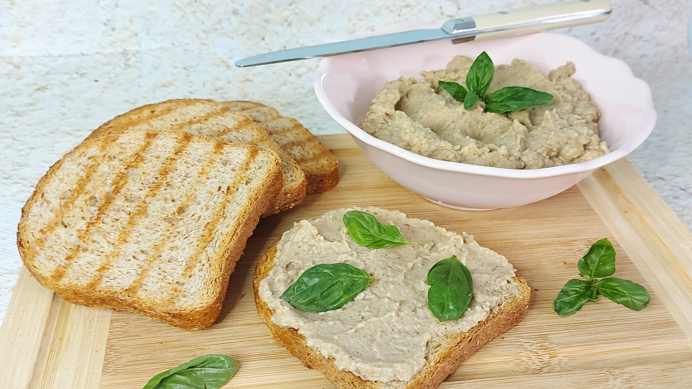

Egg Plant Cream

A delicious Egg plant cream
Good with some vegetables
At midnight is the best after drinking some alcohol
What you need to make it:
- 2 roasted flesh of the eggplant
- 1 smaller Red onion
- 3 slices of garlic
- 2 pinches of salt
- if you like black pepper
- 100g mayonnaise
Steps:
- Wash and cut the eggplants in half, then bake them with top and bottom heat at 180°C (356°F) for 45–50 minutes.
- While the eggplants are baking, peel and slice the onion and garlic. Once the 50 minutes are up, scoop out the flesh with a spoon and season it with salt and pepper, then add the mayonnaise. Mash the flesh with a fork or blend it in a mixer for a smoother texture. Chill it in the fridge to let the flavors meld… if you can wait. I couldn’t—I tested it right away on toast with some veggies! Divine!
- Enjoy your meal.
Home